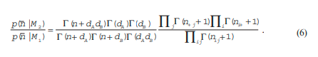

Integration over the uniform priors for A and B gives the data probability given model M2:
From this and Equation (4) we obtain the Bayes factor for the undirected data model:
The second approach to model independence between A and B gives the following:
We can now find the Bayes factor relating models M1’ (Equation 5) and M2’ (Equation 7),
with no prior preference of either:
Consider now a data matrix with three variables, A, B and C (Figure 2). The analysis of
the model M3 where full dependencies are accepted is very similar to M1 above (Equation
4). For the model M4 without the link between A and B, we should partition the data matrix
by the value of C and multiply the probabilities of the blocks with the probability of the
partitioning defined by C. Since we are ultimately after the Bayes factor relating M4 and M3
(respectively M4 ’ and M3 ’), we can simply multiply the Bayes factors relating M2 and M1
(Equation 6) (respectively M2’ and M1’) for each block of the partition to get the Bayes factors
sought:
The directed case is similar (Heckerman, 1997). The value of the gamma function is rather
large even for moderate values of its argument. For this reason, the formulas in this section
are always evaluated in logarithm form, where products like in Formula 9 translate to sums
of logarithms.
Normally, the identification of cause and effect must depend on one’s understand-
ing of the mechanisms that generated the data. There are several claims or semi-claims
that purely computational statistical methods can identify causal relations among a set
of variables. What is worth remembering is that these methods create suggestions, and
that even the concept of cause is not unambiguously defined but a result of the way the
external world is viewed. The claim that causes can be found is based on the observation
that directionality can in some instances be identified in graphical models. Consider the
models M4'' and M4' of Figure 2. In M4', variables A and B could be expected to be
marginally dependent, whereas in M4'' they would be independent. On the other hand,
conditional on the value of C, the opposite would hold: dependence between A and B
in M4'' and independence in M4' ! This means that it is possible to identify the direction
of arrows in some cases in directed graphical models. It is difficult to believe that the
causal influence should not follow the direction of arrows in those cases. Certainly, this
is a potentially useful idea, but it should not be applied in isolation from the application
expertise, as the following example illustrates. It is known as Simpson’s Paradox,
although it is not paradoxical at all.
Consider the application of drug testing. We have a new wonder drug that we hope
cures an important disease. We find a population of 800 subjects who have the disease;
they are asked to participate in the trial and given a choice between the new drug and
the alternative treatment currently assumed to be best. Fortunately, half the subjects,
400, choose the new drug. Of these, 200 recover. Of those 400 who chose the traditional
treatment, only 160 recovered. Since the test population seems large enough, we can
conclude that the new drug causes recovery in 50% of patients, whereas the traditional
treatment only cures 40%. But the drug may not be advantageous for men. Fortunately,
it is easy to find the gender of each subject and to make separate judgments for men and
women. So when men and women are separated, we find the following table:
Table 1: Outcomes for men, women, and men+women in a clinical trial
| recovery | no recovery | Total | rec. rate | |
|---|---|---|---|---|
| Men treated | 180 | 120 | 300 | 60% |
| not treated | 70 | 30 | 100 | 70% |
| Women treated | 20 | 80 | 100 | 20% |
| not treated | 90 | 210 | 300 | 30% |
| Tot treated | 200 | 200 | 400 | 50% |
| not treated | 240 | 160 | 400 | 40% |
Obviously, the recovery rate is lower for the new treatment, both for women and
men. Examining the table reveals the reason, which is not paradoxical at all: the disease
is more severe for women, and the explanation for the apparent benefits of the new
treatment is simply that it was tried by more men. The gender influences both the severity
of the disease and the willingness to test the new treatment; in other words, gender is
a confounder. This situation can always occur in studies of complex systems like living
humans and most biological, engineering, or economic systems that are not entirely
understood, and the confounder can be much more subtle than gender. When we want
to find the direction of causal links, the same effect can occur. In complex systems of
nature, and even in commercial databases, it is unlikely that we have at all measured the
variable that will ultimately become the explanation of a causal effect. Such an unknown
and unmeasured causal variable can easily turn the direction of causal influence
indicated by the comparison between models M4'' and M4', even if the data is abundant.
Nevertheless, the new theories of causality have attracted a lot of interest, and if applied
Figure 3: Symptoms and causes relevant to heart problem
with caution they should be quite useful (Glymour & Cooper, 1999; Pearl, 2000). Their
philosophical content is that a mechanism, causality, that could earlier not or only with
difficulty be formalized, has become available for analysis in observational data, whereas
it could earlier only be accessed in controlled experiments.
If we have many variables, their interdependencies can be modeled as a graph with
vertices corresponding to the variables. The example in Fgure 3 is from Madigan and
Raftery(1994) and shows the dependencies in a data matrix related to heart disease. Of
course, a graph of this kind can give a data probability to the data matrix in a way
analogous to the calculations in the previous section, although the formulas become
rather involved and the number of possible graphs increases dramatically with the
number of variables. It is completely infeasible to list and evaluate all graphs if there is
more than a handful of variables. An interesting possibility to simplify the calculations
would use some kind of separation, so that an edge in the model could be given a score
independent of the inclusion or exclusion of most other potential edges. Indeed, the
derivations of last section show how this works. Let C in that example be a compound
variable, obtained by merging columns c1, … cd. If two models G and G’ differ only by
the presence and absence of the edge (A, B), and if there is no path between A and B except
through vertex set C, then the expressions for p(n |M 4) and p(n |M 3) above will
become factors of the expressions for p(n |G )and p(n |G'), respectively, and the other
factors will be the same in the two expressions. Thus, the Bayes factor relating the
probabilities of G and G’ is the same as that relating M4 and M3. This result is
independent of the choice of distributions and priors of the model, since the structure
of the derivation follows the structure of the graph of the model — it is equally valid for
Gaussian or other data models, as long as the parameters of the participating distributions
are assumed independent in the prior assumptions.
We can now think of various “greedy”methods for building high probability
interaction graphs relating the variables (columns in the data matrix). It is convenient and
customary to restrict attention to either decomposable (chordal) graphs or directed
acyclic graphs. Chordal graphs are fundamental in many applications of describing
relationships between variables (typically variables in systems of equations or inequali-
ties). They can be characterized in many different but equivalent ways(see Rose, 1970).
One simple way is to consider a decomposable graph as consisting of the union of a
number of maximally connected complete graphs (cliques, or maximally connected
subgraphs), in such a way that (i) there is at least one vertex that appears in only one
clique (a simplicial vertex), and (ii) if an edge to a simplicial vertex is removed, another
decomposable graph remains, and (iii) the graph without any edges is decomposable. A
characteristic feature of a simplicial vertex is that its neighbors are completely connected
by edges. If the graph G’ obtained by adding an edge between s and n to G is also
decomposable, we will call such an edge a permissible edge of G. This concept implies
a generation structure (a directed acyclic graph whose vertices are decomposable graphs
on the set of vertices) containing all decomposable graphs on the variable set. An
interesting feature of this generation process is that it is easy to compute the Bayes factor
comparing the posterior probabilities of the graphs G and G’ as graphical models of the
data: let s correspond to A, n to B, and the compound variable obtained by fusing the
neighbors of s to C in the analysis of Section 5. Without explicit prior model probabilities
we have:
A search for high probability graphs can now be organized as follows:
1. Start from the graph G0 without edges.
2. Repeat: find a number of permissible edges that give the highest Bayes factor, and
add the edge if the factor is greater than 1. Keep a set of highest probability graphs
encountered.
3. Then repeat: For the high probability graphs found in the previous step, find
simplicial edges whose removal increases the Bayes factor the most.
For each graph kept in this process, its Bayes factor relative to G0 can be found by
multiplying the Bayes factors in the generation sequence. A procedure similar to this one
is reported by Madigan and Raftery (1994), and its results on small variable sets was
found good, in that it found the best graphs reported in other approaches. For directed
graphical models, a similar method of obtaining high probability graphs is known as the
K2 algorithm (Berthold & Hand, 1999).
We will now consider data matrices made up from ordinal and real valued data, and
then matrices consisting of ordinal, real, and categorical data. The standard choice for
a real valued data model is the univariate or multivariate Gaussian or normal distribution.
It has nice theoretical properties manifesting themselves in such forms as the central limit
theorem, the least squares method, principal components, etc. It is possible to formulate
the theory of the model choice section using inverse Wishart distributions as conjugate
priors for multivariate normal distributions, but this is leads to fairly complex formulas
and is seldom implemented (Bernardo & Smith, 1994). The normal distribution is also
unsatisfactory for many data sets occurring in practice, because of its thin tail and
because many real life distributions deviate terribly from it. Several approaches to solve
this problem are available. One is to consider a variable as being obtained by mixing
several normal distributions. Another is to disregard the distribution over the real line,
and considering the variable as just being made up of an ordered set of values. A quite
useful and robust method is to discretize the variables. This is equivalent to assuming
that their probability distribution functions are piecewise constant. Discretized variables
can be treated as categorical variables by the methods described above. The methods
waste some information, but are quite simple and robust. Typically, the granularity of the
discretization is chosen so that a reasonably large number of observations fall in each